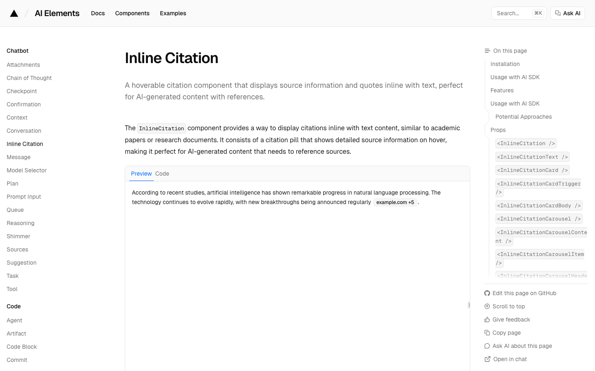
建议要
AI Elements · Inline Citation
句子里的来源胶囊，悬停出详情。最接近「对原句的回答 + 出处能点开」。
你有 X 会员，背后能搜到正在用的库；开源社区把可复制的代码贴出来。 方法不是「刷热度画廊」，是按产品缺口去捞：结论和问题点是主秀，过程、引用、检索仪器先弱化再放进去。 Will's S：想突出重点，先弱化次要；动效要有目的、且不能当唯一信息。 首页已经搬完。下面只选案件页还缺的零件。点「要 / 不要」，底部复制结果发回。
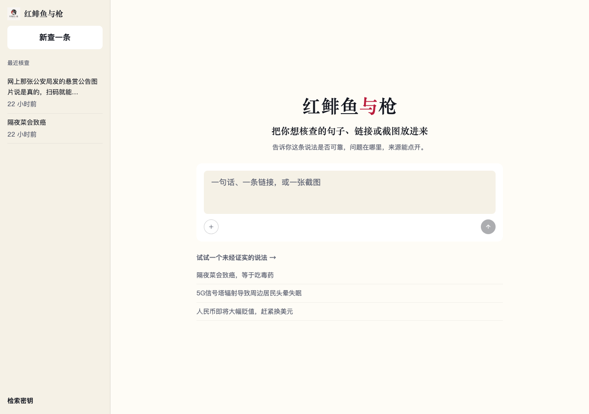
已搬
品牌、一句说明、灰底输入、加号、圆发送、最近核查。不再从零发明。
还缺案件页三件：过程折起、句中 [n] 引用、检索时的安静仪器。
产品要的是脚注节奏：[n] 悬停看出处。字重和颜色分层，不要做成大徽章。

句子里的来源胶囊，悬停出详情。最接近「对原句的回答 + 出处能点开」。
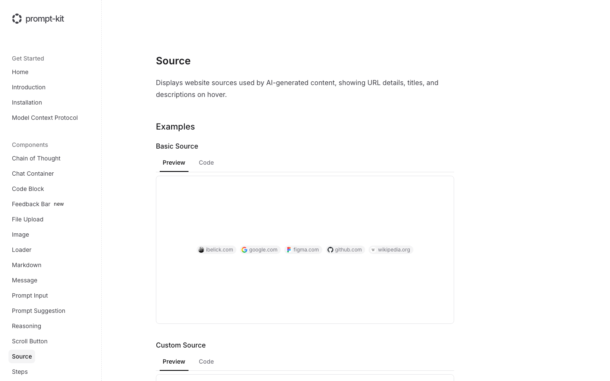
结论底下一条 favicon 来源。当脚注行，不进主秀。悬停出标题和摘要。
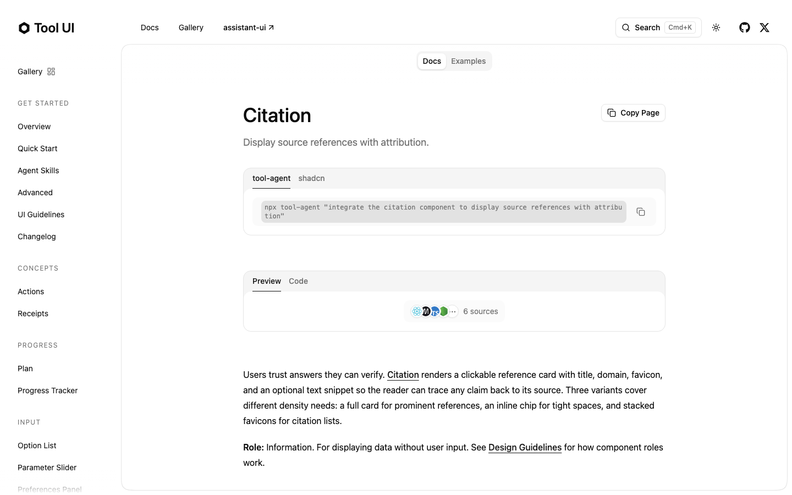
叠 favicon +「6 sources」。密度高，适合来源很多时。不当主按钮，也不要整张引用卡盖住判断。
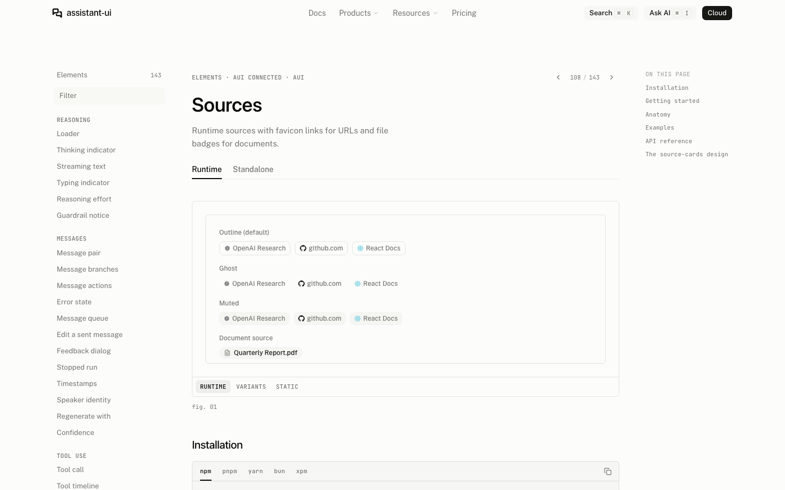
芯片本身安静。但库的产品脸是 ChatGPT 线程。搬芯片可以，搬「New chat / 左栏线程」不行。
评委或较真用户再展开。推理用时、工具名退后。不要 Agent 指挥台。
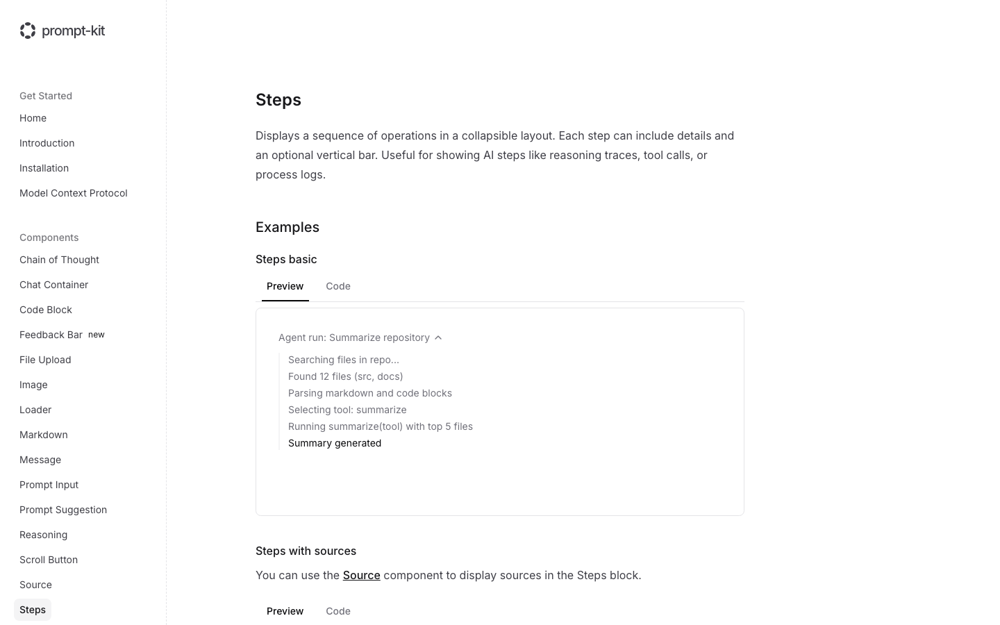
一条竖线 + 可折步骤。正好对上「正在查哪些原子 / 哪路检索」。默认收起。
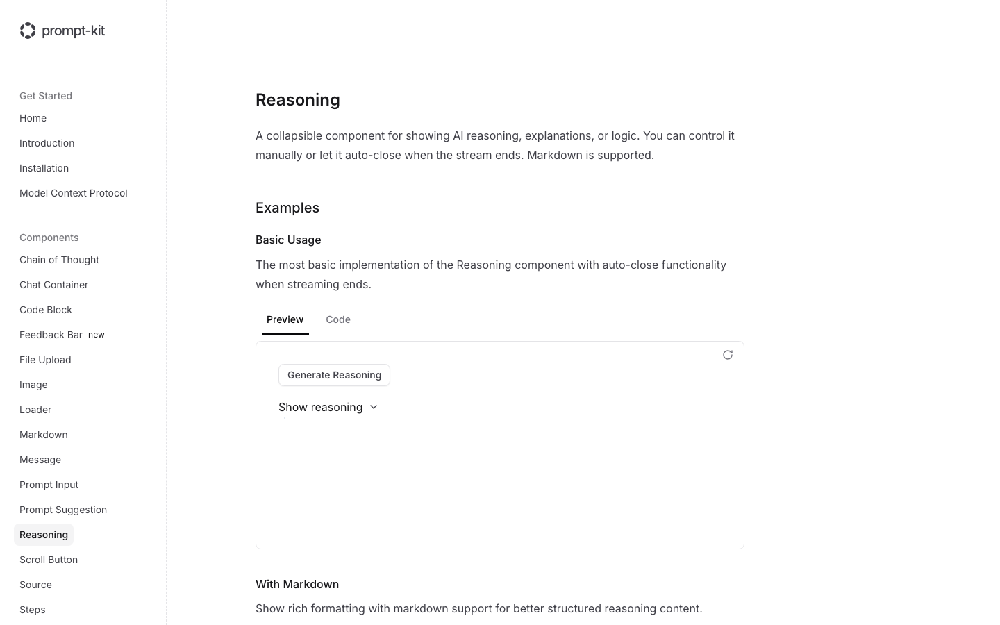
「Show reasoning ▾」。过程不是主秀：流的时候开，结束就收。符合动效要可选、不能当唯一信息。
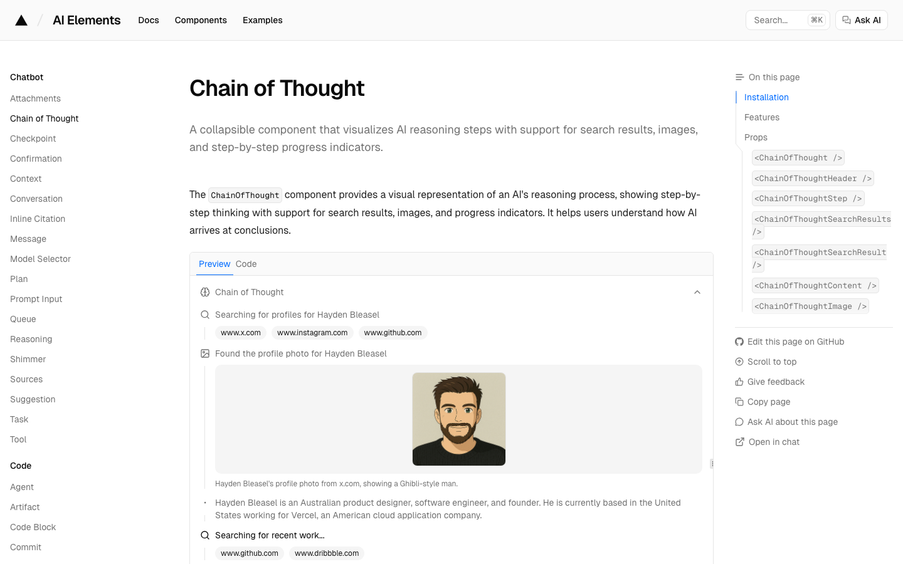
步骤里能挂搜索结果徽章。对检索过程有用。头像卡、个人档案示例不要搬；不要做成第一屏英雄。
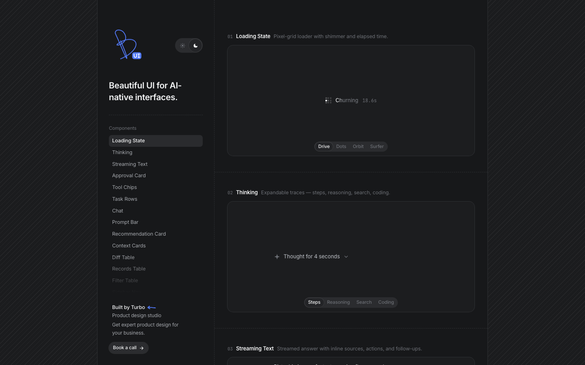
X 上这周在传：thinking traces、句中来源、approval。折起节奏可抄。暗色玻璃、Churning 人格文案不要进产品界面。
Apple Motion：为改善体验而动，不要为了动而动；动效应是可选的。雷达告诉你「几路检索在跑」，结论出来就停。
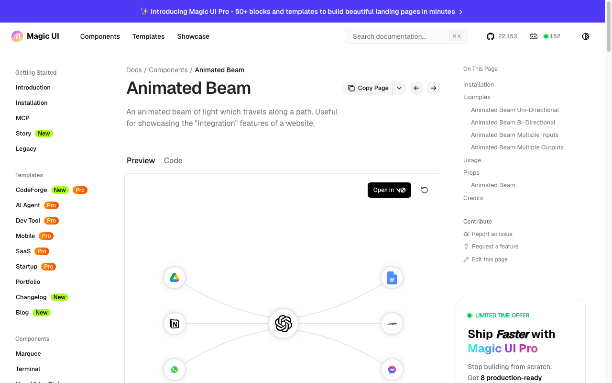
脊柱案件页还空着。搬 mvp 那版，染成墨/纸，查的时候亮，出结论就停。不进首页，不当品牌。
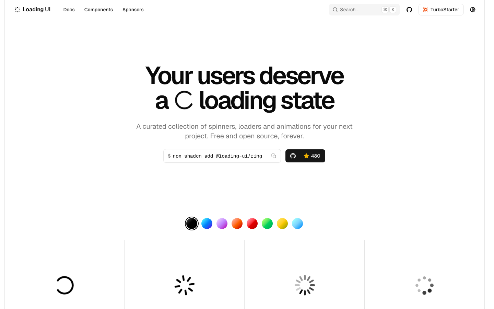
查证中要安静的圈，不是彩虹 conic。单色化成墨。不确定完成度时用它，不要假进度条。
当前选择
要：
不要：